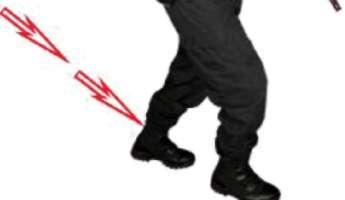
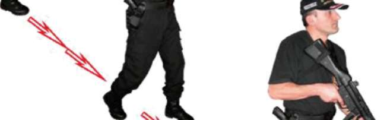
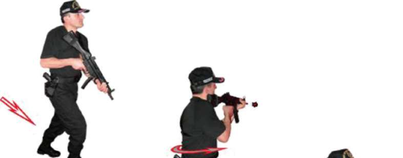

Yürüme
Pozisyonu
Belden
Dönerek Sola
Çapraz Atış
Pozisyonu
Yürüme
Pozisyonu
Resim-17.e.2) Hedeflere Çapraz Yürürken Soldan Çıkan Hedeflere Hareket Hâlinde Atış Tekniği
Tekniği Uygulamalı Olarak Çalışma Şekli
^ Emniyet tedbirlerini okuyun. Atış poligonuyla ilgili gerekli önlemleri alın.
^ Vücudunuzu basit ısınma teknikleri ile ısındırın ve çalışmaya hazırlayın.
Tabanca ve şarjörleri kontrol edip koruyucu malzemeleri giyin ve giydirin.
^ Tekniklerin hepsini, atışlı çalışmadan önce yetirince kuru çalışın.
^ Bu teknikleri poligonun büyüklüğüne göre yerleştireceğiniz boy hedef sayısı kadar personelle aynı anda çalışabilirsiniz.
^ Bu tekniği boy hedefine yaklaşık olarak 30 metre mesafede iki şarjörünüzü de tam kapasite doldurun. İlk şarjörünüzü kılıfına, ikinci şarjörünüzü elinizdeki tabancanıza takıp normal dolduruş yaparak ileriye doğru yürüme komutunu bekleyin.